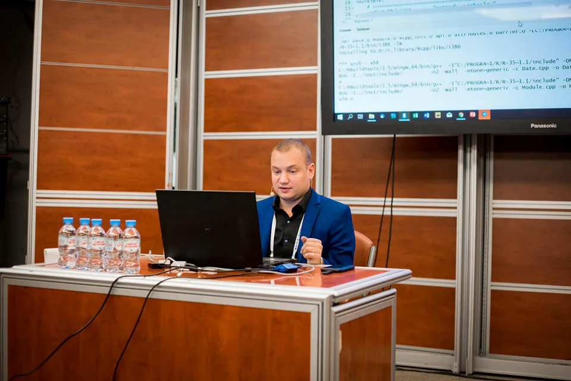
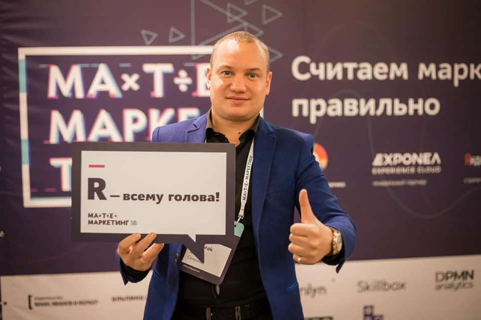
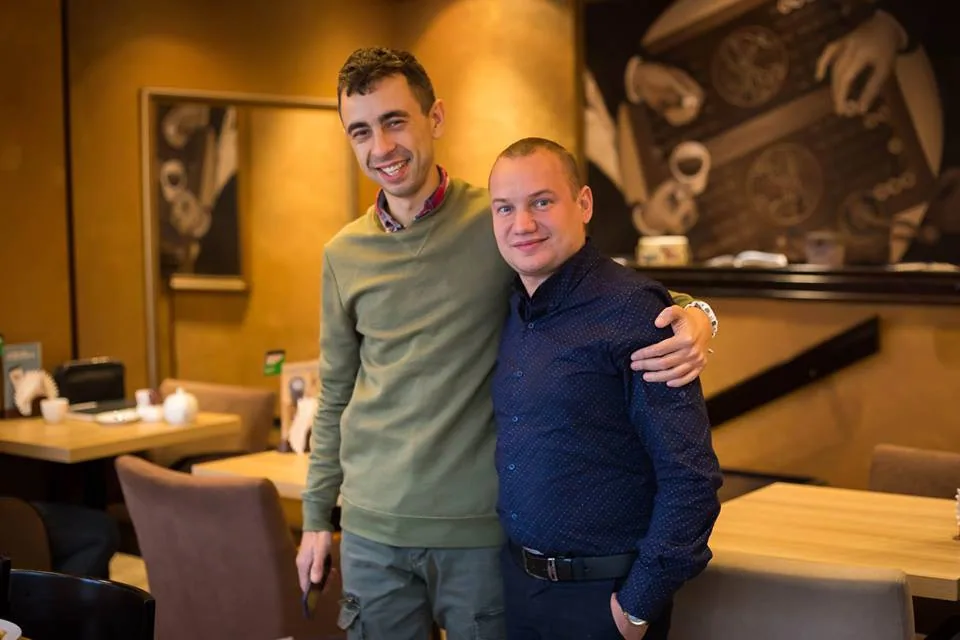
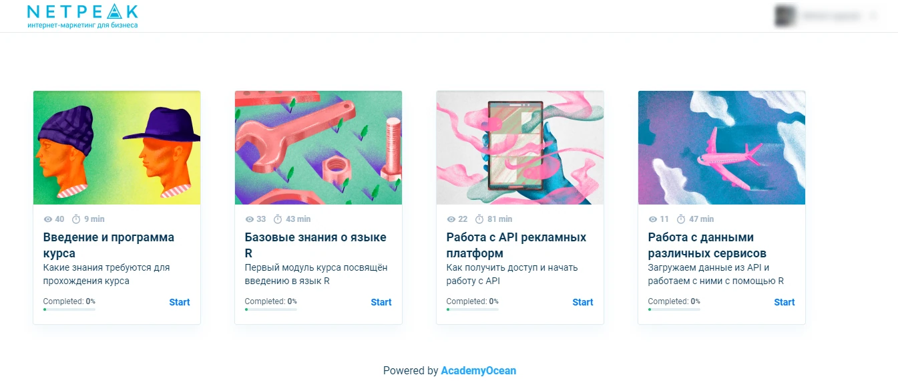

Зачем учить язык R интернет-маркетологу, и как сделать это максимально быстро
Друзья, у меня для вас хорошая новость: 1 ноября стартовал первый поток моего авторского онлайн-курса«Язык R для интернет-маркетинга». В этой статье я расскажу о том, когда и зачем я начал учить R, с какими сложностями столкнулся, как появилась и реализовывалась идея создания курса и чем этот курс может помочь именно вам. Поехали!

Впервые статья была опубликована на блоге Netpeak
Зачем учить язык R интернет-маркетологу, и как сделать это максимально быстро
Новые вызовы
За последние 3 года язык R стал основным рабочим инструментом, который я использую ежедневно. Придя в Netpeak в 2014 году, я на достаточно высоком уровне владел Excel и имел опыт нескольких лет работы с базами данных. Ранее я сталкивался с задачами обработки данных, превышающих по объему десятки, а иногда и сотни миллионов строк.
Но в Netpeak я столкнулся с новой сложной задачей. Дело в том, что раньше я работал с данными по одному конкретному проекту, а в агентстве таких проектов сотни. Их ведут около 40 специалистов по контекстной рекламе и к каждому из проектов одновременно используется ряд рекламных и аналитических сервисов.
Первой моей задачей было своевременно выявлять проекты с недостаточно высокой эффективностью рекламных кампаний, подключаться к ним, искать точки роста или причину низкой эффективности.

Поиск инструмента
Очень быстро я понял, что контролировать такое количество проектов и различных сервисов, которые используются в работе с ними в ручном режиме, будет сложно. Мне понадобился инструмент, с помощью которого я мог собирать в одном месте данные по всем проектам и нашим основным платформам.
Решить такую задачу, используя только какую-либо из существующих на рынке BI-платформ невозможно — каждая BI-платформа (включая таких лидеров рынка, как Power BI, Tableau и Qlik) имеет в своем арсенале достаточно большой набор коннекторов, но этого не достаточно для решения моей задачи.
К тому же все топовые BI-платформы в первую очередь ориентированы на западный рынок и его продукты. Практически в любой BI-платформе вы найдете коннекторы к Facebook, Google Analytics, Bing и другим сервисам, популярным на Западе, но вряд ли вам встретится встроенный коннектор к топовым сервисам постсоветского пространства: Яндекс. Директ, Яндекс. Метрика, Вконтакте, MyTarget. А мне нужно было настроить сбор данных как из всемирно используемых сервисов, так и сервисов, популярных только в СНГ.
Как определиться с языком
Решить такую задачу можно только с помощью языка программирования. Оставалось определиться с языком, который мне следовало выучить для ее решения. Для этого сегодня есть достаточно много технологий: PHP, Python, C++, R, Java, Scalla, Julia. У меня была конкретная задача и нужна была технология, которая позволяла бы решить эту задачу, не вникая при этом в те возможности, которые не пригодятся для ее решения.
PHP и C++ я отверг — у них совершенно другое предназначение. Scalla и Julia подходят, но это достаточно молодые языки и для них было сложно найти какие-то готовые решения и библиотеки, которые ускоряют процесс решения задачи.
Остаются Python и R — оба языка идеально подойдут для сбора данных из всех нужным мне платформ. А еще оба языка появились в начале 90-х и обросли большим сообществом, написавшим для них огромное количество расширений под решение практически любой задачи.
Почему я выбрал R
Во-первых, R имеет достаточно узкое и конкретное назначение. Этот язык статистики разработали непосредственно для работы с данными. У Python назначение шире и хотя он тоже умеет работать с данными, делать это с его помощью не так удобно.
К примеру, самый популярный модуль для манипуляции с данными написанный для Python, pandas, был полностью заимствован из R. Python очень широко используется в веб-программировании, а также для решения огромного спектра других задач. Он более универсален, но, приступая к изучению, стоит решить, нужен ли вам весь этот арсенал?
Во-вторых, R — самый мощный инструмент для визуализации данных из всех, которые мне встречались за 10 лет работы в области аналитики. Ни Python, ни какая-либо BI-платформа не может сравниваться с R в области визуализации данных. Самое популярное расширение для визуализации данных на R — ggplot2 (его разработал Хедли Викхем ещё в 2005 году) — пользователи со всего мира установили более миллиона раз.

Погружение в предмет
Начав изучение R в 2014 году, я сразу пытался применять его для решения описанной выше задачи. Я разбил ее на подзадачи такого типа: написать сбор данных из Google Ads, научиться визуализировать данные по показателю качества, реализовать сбор данных из Яндекс. Директ и так далее.
Постепенно я начал решать одну за одной эти подзадачи, собрал много информации, проведя сотни часов в поисках решений и документации к пакетам на stackoverflow.com, r-bloggers.com и на огромном количестве других ресурсов. Весь найденный материал я собирал, структурировал и оформлял в виде статей для нашего блога. В прошлом году мы даже опубликовали дайджест статей по теме применения языка R в интернет-маркетинге.
Восприятие материала
Многие свои решения я упаковывал в пакеты для языка R и выкладывал в свободный доступ на GitHub. Достаточно быстро эти пакеты заметили — другие аналитики, компаниии и пользователи начали делиться задачами, которые они смогли решить с помощью моих разработок. Вот несколько примеров и это далеко не полный перечень кейсов с использованием моих пакетов:
- «Как загрузить статистику из рекламных систем в Google BigQuery» от Антона Леонтьева из eLama.
- «Как использовать Rscript в качестве источника данных в Microsoft Power BI на примере Яндекс.Метрики» от Павла Мрыкина из MediaGuru.
- «Как определить мошенничество CPA-сетей с помощью Logs API Yandex.Metrika и R» — статья по нашумевшей теме в личном блоге Дмитрия Осиюка.
К моменту решения своей глобальной задачи (подробно рассказал о ней в статье «Как мы внедрили BI-аналитику в отделе контекстной рекламы») я накопил огромный объем структурированной информации: прочитал немало книг о программировании на R, прошел практически все онлайн курсы, которые смог найти в интернете и действительно много времени провел в поисках информации на ресурсах, о которых писал выше.
Подготовка курса
В мае 2017 года Макс Уваров предложил мне записать курс о применении языка R в решении задач интернет-маркетинга и я согласился, потому что собрал действительно много информации.

Около года я формировал, прорабатывал и структурировал программу курса. В итоге в нем сформировался материал, который может помочь аналитикам и интернет-маркетологам пройти тот же путь, но затратить на него не 3 года, а несколько месяцев. 1 ноября 2018 года стартовал первый поток курса «Язык R для интернет-маркетинга».
Бонус
Первому потоку слушателей повезло: неделю до старта мы распростаняли курс с 40% скидкой, но акция длилась до 31 октября и уже закончилась. Для тех же, кто дочитал статью до конца, мы предлагаем в подарок промокод netpeakblog-20 на скидку 20% до конца 2019 года.
А еще с коллегами из AcademyOcean мы запустили академию «Язык R в интернет-маркетинге» — это конспект лекций курса, с которым можно познакомиться бесплатно. У академии много отсылок к платным материалам курса, но и не используя их можно разобраться в сути предмета и начать освоение языка R.

Если у вас возникли вопросы или вы хотите уточнить нюансы, добро пожаловать в комментарии.